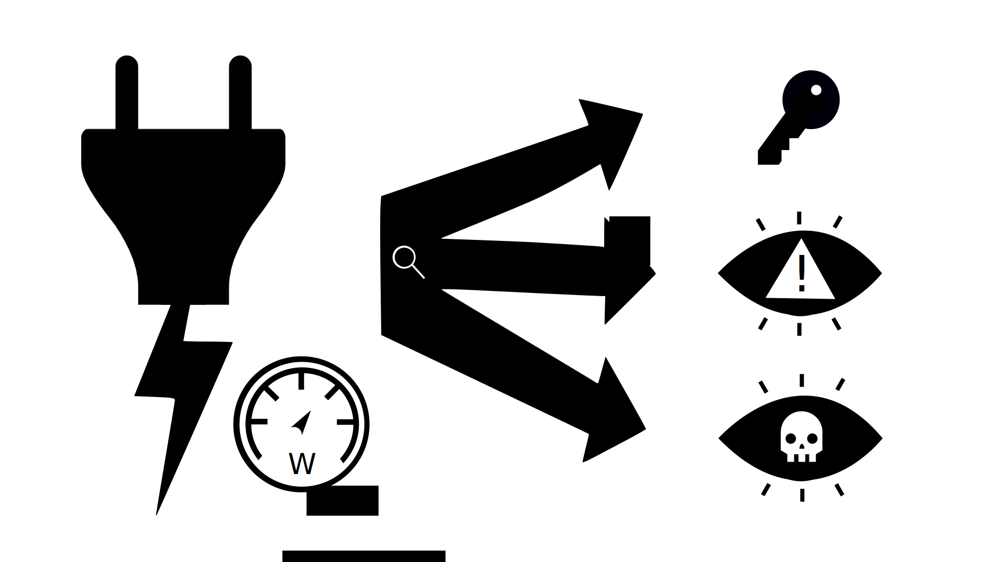

Introduction Side-Channels
Have you ever heard your laptop fans ramp up and knew, just by the intensity, that it's working hard? If yes, then congratulation, you already used side channel information to diagnose your own system.
Without going into detail: Side channel information come from unavoidable side/waste products. For example, the sound of a fan spinning, the time it takes to calculate if your password is correct or even the power draw of your system. In those cases the sound, the time needed for calculations and power draw are undesirable and not productive, but nonetheless allow for interesting inferences, like the current workload of your system or how long your password is :)
What can we do with Side-Channel Information?
If you watched any FBI/CSI/Crime Solving series or movie in the past decades you will probably already know plenty of examples where the heroic detective will use some kind of Side-channel, like the remaining imprints on a notebook or the remaining heat of a cup of coffee to determine how long ago the culprit left, which allowed the detective to gain further information and allow them to solve the case!
Similar to those cases, Cybersecurity Specialists and Hackers have been using Side-Channels to gain an advantage for decades now. For example, measuring the time it takes a weak password checker program, to verify a password, can reveal how many characters of a password an attacker guessed right and therefore allow him to guess the right password a lot faster! This is pretty much the notebook imprint trick of the hacker world.
Would we take another comparison to the selection of detective tricks, then the remaining heat in the cup trick would compare novelty wise pretty nicely to the power-analysis attacks in the cybersecurity world. This is an attack where you analyze the power consumption during the encryption of known data and inference from that the used secret key.
Can we do even more?
This question was the driving force behind my bachelor thesis "Side-Channel Analysis for detecting anomalies in software", where I researched the functionality of power-analysis attacks straight down to the semiconductor level and brought this theoretical knowledge into a practical experiment, proving that patterns in the power consumption could be used to determine the state of an automotive ECU after an unstable hack.
This therefore proofed that there is a lot of untapped potential for multiple more use cases, like virus or intrusion detection systems or new kinds of attacks.
If this sparked your interest, my bachelor thesis could be worth a read. The only catch: It's currently only available in German.